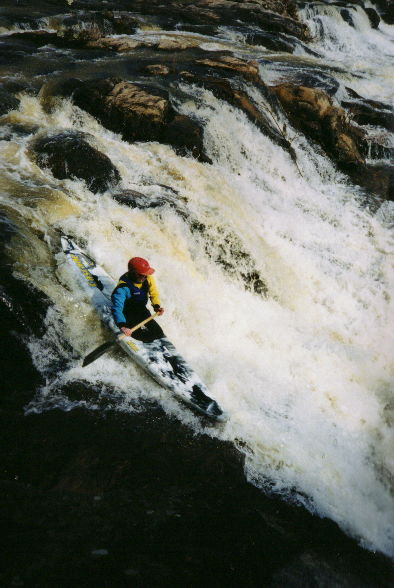
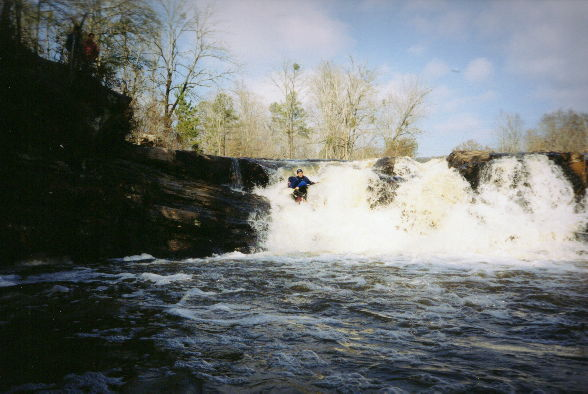
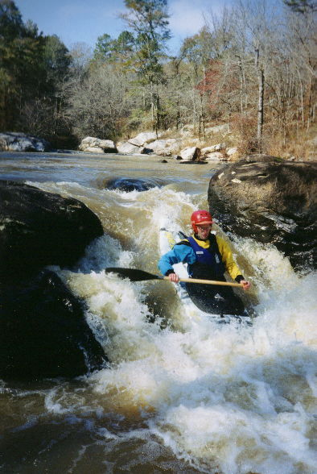
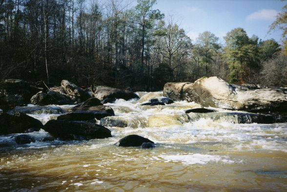

|  | Satan's Garden or Great Falls. It goes even farther across the river. This is at low water on the far right. |
|  | Kevin on the same. |
|  | Mark says: "Hey Kevin, you're right, there is a pinning rock down there (or something). |
|  | "Any which way you lose" from downstream. |